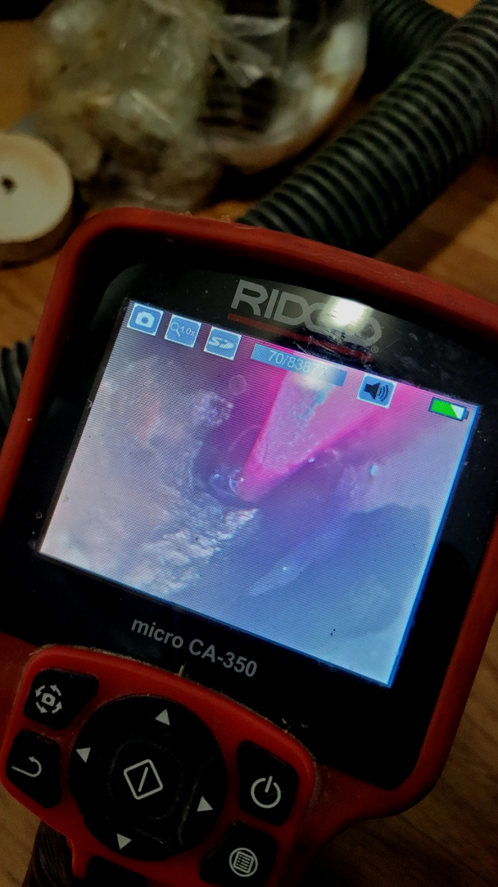
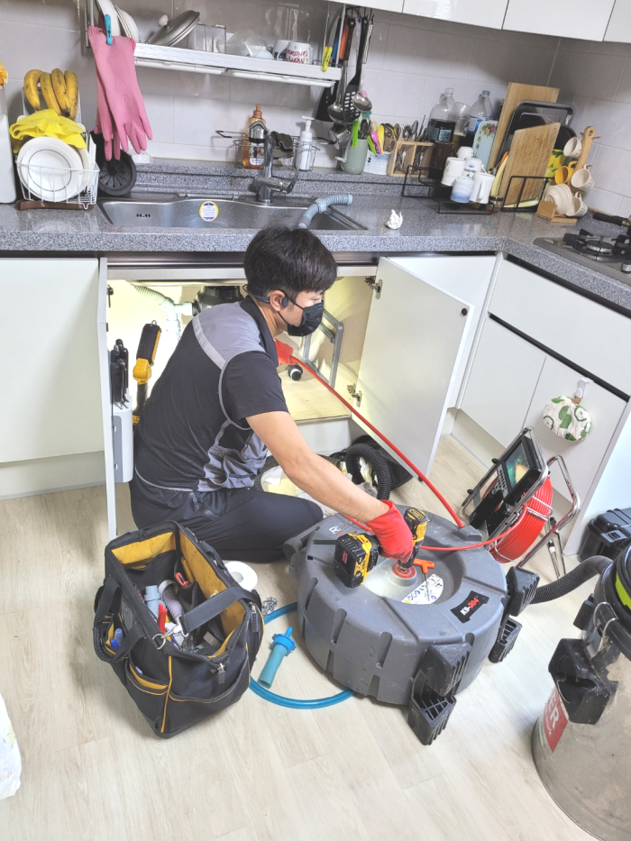
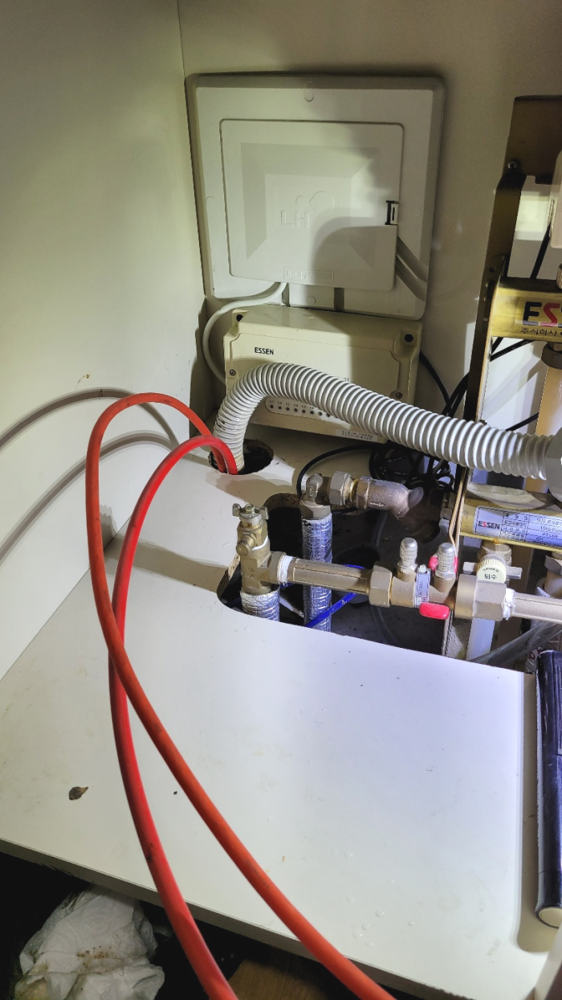
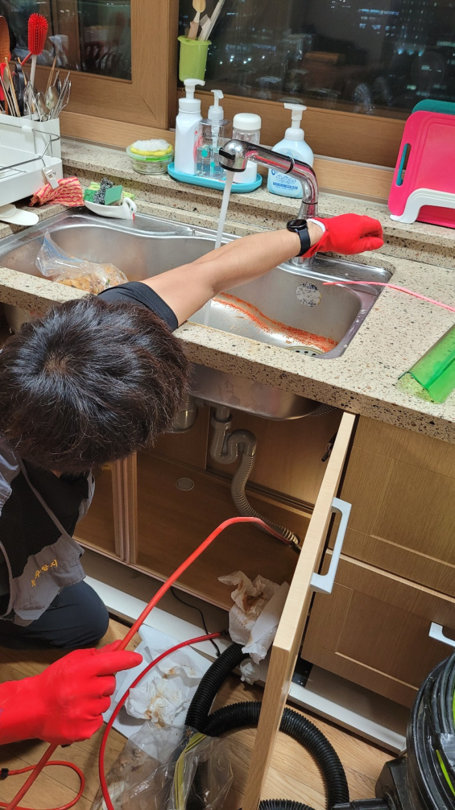
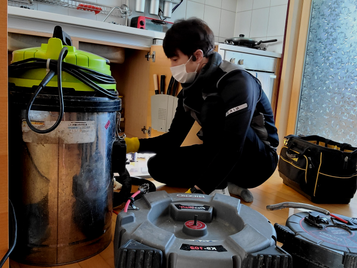
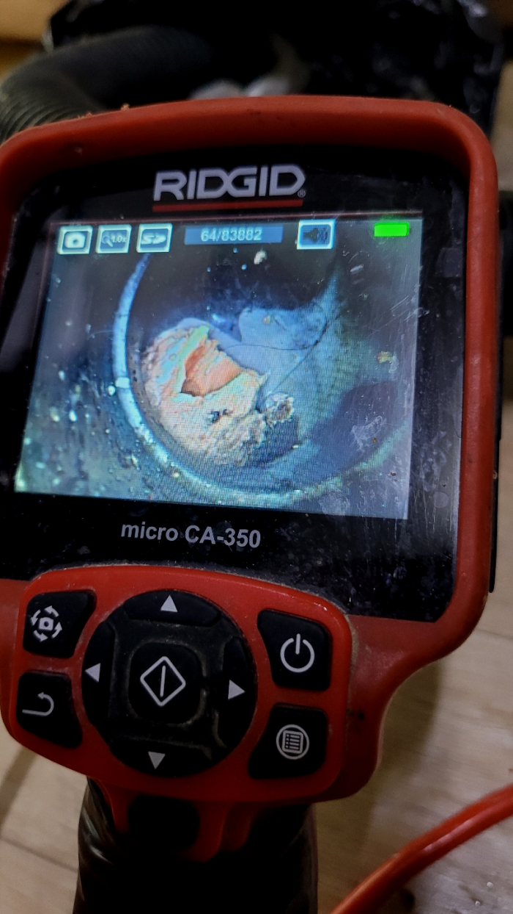

🏠 하남 덕풍동 싱크대배수관막힘 미사동 하수도역류 뚫는곳 설비
용인 싱크대막힘 전문 시공 후기

📋 작업 개요
- 위치: 용인
- 서비스 유형: 싱크대막힘, 변기막힘, 하수구막힘, 배관막힘, 역류해결, 뚫는업체, 배관청소
- 작업 일시: 2024. 1. 12. 17:17
- 업체명: 하수구수사대 (010-5615-2118)
🔍 문제 상황
안녕하세요^^
설비전문업체 "하수구수사대"를 찾아주셔서 고맙습니다^^
항상 사용하는 집안에서 배출구 막히는 문제가 발생했다면 총알처럼 방문해서 뚫어드리고 있어요. 배출구작업 문의량이 많아서 조금 더 만족시켜 드릴 수 있도록 성심성의껏 최선의 힘을 다하고 있는데요. 정도가 심각하여 배출구 물이 새는 현상까지 보이더라도 걱정하지 마세요
해야 할 일을 배출구가 막혔다는 이유 하나로 제때 못하게 되니 그로 인한 스트레스도 쌓이게 되죠. 배출구는 막힘과 동시에 해결을 해야합니다. 일반인이 손 볼 수 없는 상황들이 대다수인 만큼 전문업체의 도움이 꼭 필요한 분야 중 하나죠.

🔎 원인 분석
💡 전문가 진단: 하남 덕풍동 싱크대배수관막힘 미사동 하수도역류 뚫는곳 설비
하남 덕풍동 싱크대배수관막힘 미사동 하수도역류 뚫는곳 설비
다가구 건물에서의 좁은 배수관배관의 경우, 샤프트기를 이용하여 배관 내부의 찌꺼기를 제거하는 것이 중요합니다. 미생물이 번성하여 이물질을 제거하고 배수관배관을 철저히 청소해야 합니다. 배수관 문제는 놓치게 되면 상황이 악화될 수 있으므로 빠른 대처가 필요합니다.
배출관 구조를 확실히 이해하고 있어야만 작업 진행을 하기 전에 어떤식으로 작업을 할지 막히게 되었을지 간단하게 예상을 할 수도 있고 진행을 할때 이런 전문지식이 있어야 작업시간 단축에 큰 도움이 됩니다.
배관 하수관막힘은 수많은 원인들이 존재하지만 잘못 되기전에 바로 잡지 않았기에 바로 잡을 수 없게끔 거대해지는 거죠. 느껴지지가 않아 별것도 아닐거라고 여겨버리고 방관하시기도 한답니다.
배수구의 경우에는 오염 물질 등이 계속해서 통과한다는 특징을 가지고 있는데요. 이러한 점으로 인해 악취 또는 오염이 발생할 가능성이 큰 장소라고 할 수 있어요.

🔧 작업 과정
본격적으로 작업을 진행하기에 앞서 석션기를 이용하여 고여있는 물을 빼내어 주기로 했습니다. 이와 함께 하수입구에 있는 작은 이물질들은 석션기로 할 수 있는 데까지 제거해 주었습니다. 그러나 하수배관 안 쪽에는 크고 딱딱한 이물질이 많았고 석션기로 제거가 어려워 보여 내시경 카메라 전문장비로 확인해보기로 하였습니다.
우선 플랙스샤프트 장비를 막혀있는 퇴수배관에 넣어서 오염물질과 석회가 작은 크기의 입자로 분쇄되기를 기다려 보았습니다. 다행히 퇴수배관에 지저분하게 달라붙어 있던 이물질이 장비에 의해서 작은 덩어리로 분해되는 것을 확인할 수 있었습니다.
저희배출관설비회사의경우 실력자로만 모여있기에 확실하게뚫어버릴수 있다는생각을갖고 설령실패했더라도 비용을요구하지 않고있기때문에 걱정하시지않아도됩니다
이같은체계가 생겨난이유는 소비자분과의 신망을 지키기위해서 생긴것이고 이같은모토를 지키기위해 하수구에이물질이없게끔 하고있답니다.비용에대해서 알고싶으실수있는데요.배수의어떤곳이 어느만큼 파손된건지에따라 견전가가정해지기때문에 정확하게 하시려면 내방해서 확인해보는게 정확한데요.
배출구배관을 막고 물이 통하지 않게 하다 보니 당연히 그 속에서 점점 더 섞어가면서 악취까지 발생시켜서 생활하기 힘들게 만들기 때문에 미리 배관 스케일링을 받고 이사를 가시면 편합니다.
하지만 여기처럼 막힘이 심한 현장이라면 찌꺼기들을 하나도 남기지 않고 청소하는 게 앞으로의 하수관 막힘 재발방지를 하는 최선의 방법입니다. 정말 중요하게 여겨야 되는 건 분명한 문제를 알아내고 초반에 하수관막힘 문제점을 잡을 수 있었기에 한번에 해결할 수 있었습니다.
내시경 장비가 퇴수 배관 속을 훤히 보여주기에 하수구의 어느 한쪽도 놓치지 않고 꼼꼼하게 스케일링 작업을 진행할 수 있습니다. 퇴수 막힘이 심한 구간도 집중적으로 작업을 할 수 있는 것이지요.


✅ 작업 완료
저희는 이 부분도 놓치지 않고 하수관청소를 함으로서 향후 추가로 이물질을 유입하지 않는 한, 막힘 없이 사용하실 수 있도록 도와드렸습니다. 여러분동 비슷한 하수관막힘 불편을 겪고 계시다면 지금 전문가에게 문의하세요!
#하수구막힘 #하수구뚫음 #하수구역류 #씽크대막힘 #싱크대역류 #오수관막힘 #하수구청소 #욕실하수구막힘 #변기막힘 #하수구뚫는비용 #싱크대수리 #화장실막힘




⚠️ 주방 싱크대 배관 막힘 예방 수칙
- ✅ 기름기가 묻은 식기나 프라이팬은 설거지 전 키친타올로 반드시 기름때를 닦아내세요.
- ✅ 주기적으로 싱크대 개수대에 뜨거운 물을 가득 받아 한 번에 내려 배관 내부 기름을 씻어내세요.
- ✅ 배수구 거름망을 미세한 필터로 사용하시고 음식물 찌꺼기가 틈으로 새어 들지 않게 관리하세요.
- ✅ 베이킹소다와 식초를 뜨거운 물과 함께 일주일에 한 번씩 부어주면 배관 살균과 막힘 예방에 좋습니다.
💡 핵심 정리
- 확실한 장비 작업(내시경 점검 및 샤프트 스케일링)으로 원인을 뿌리 뽑습니다.
- 작업 후 1년 이내에 동일한 부위 재발 시 100% 무상 A/S 서비스를 보장합니다.
- 서울 · 경기 · 인천 전 지역에 24시간 언제든 긴급 출동할 수 있도록 항시 대기 중입니다.
❓ 자주 묻는 질문 (FAQ)
🚨 용인 싱크대막힘 문제로 고민이신가요?
정확한 원인 진단과 확실한 시공으로 재발 없는 해결을 약속드립니다.
24시간 긴급 출동 | 서울 · 경기 · 인천 전지역 | 1년 내 재발 시 무상 A/S